7-2-2 トレーディングアーム
準備品
|
油脂・その他 |
軸力安定剤 |
構成図
|
1 |
MEMBER ASSY, RR SUSPENSION (E1250-A1000) |
2 |
ARM SUB-ASSY, RR TRAILING (D8701-B1000) |
|
3 |
BRACKET, RR ABSORBER (D8715-B1000) |
4 |
ABSORBER ASSY, SHOCK, RR (D8230-B1000) |
|
5 |
BOLT FLANGE, TRAILING ARM PIVOT (D8718-09T10) |
6 |
NUT, FLANGE (Z5129-00001) |
|
7 |
BOLT FLANGE, SHOCK ABSORBER, RR (D8238-00450) |
8 |
NUT, FLANGE (Z5120-00000) |
|
9 |
WASHER, RR AXLE (A1192-B1000) |
10 |
NUT, RR AXLE (A1191-B1000) |
|
11 |
BOLT FLANGE (Z1210-02001) |
12 |
BOLT FLANGE (Z1210-01800) |
取り外し前作業
-
補器バッテリマイナスターミナル切り離し10-1 補器バッテリ
-
リヤシート取り外し4-2-1 シート
-
COVER, RR COWL, LWR取り外しCOVER, RR COWL, LWR取り外し
取り外し手順
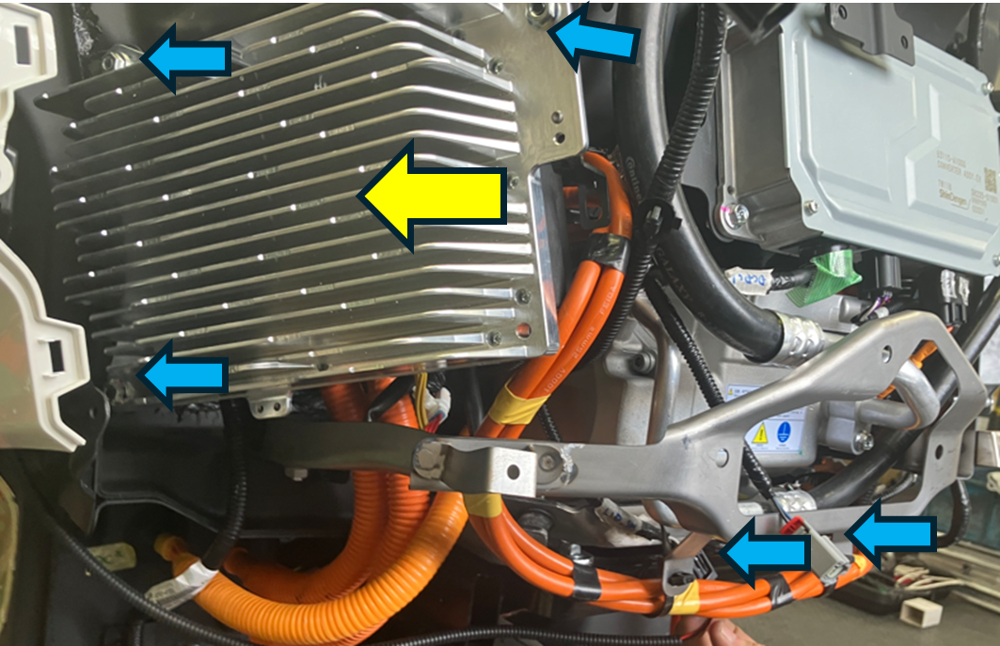
1.高圧電源ケーブル切り離し
-
高圧電源ケーブルのクランプ2か所を外し、インバーターのナット3個を外す。
-
インバーターを引き出す。
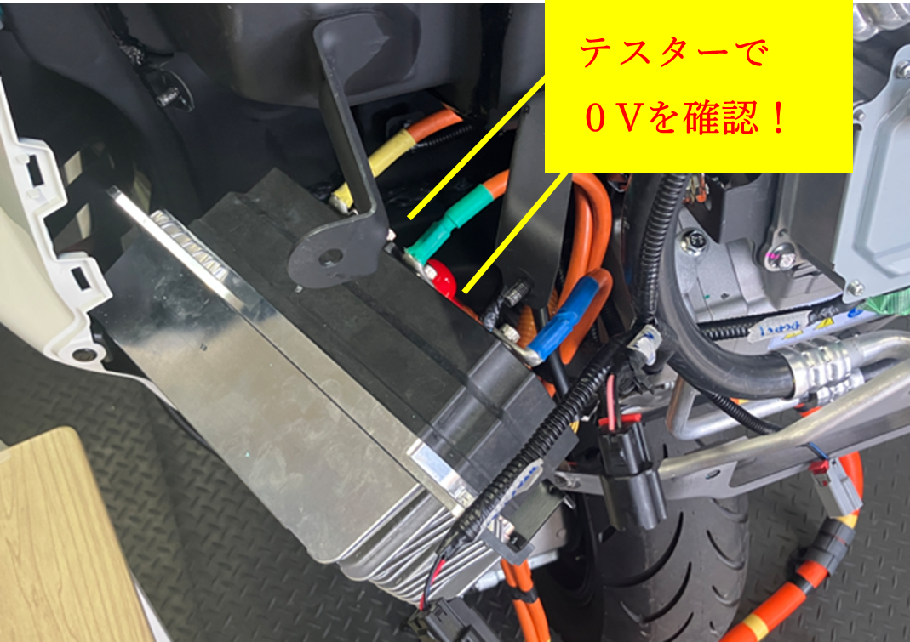
-
インバーターにはメインバッテリーに繋がる赤端子/黒端子、ホイールに繋がる青端子/緑端子/黄端子がある。
-
青端子/緑端子/黄端子を外し車体と分離する。
※メインスイッチオフ後10秒で電圧は0Vに設計上なっている。
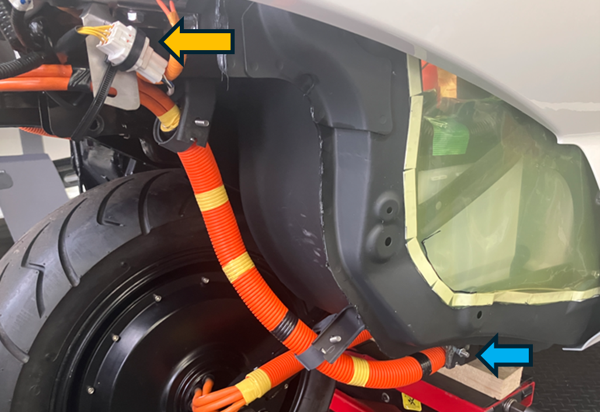
-
フレーム側に後方に固定されているカプラーを外し、後輪モーターに繋がる高圧電源ケーブルの固定クランプ3か所のボルトナットを取り外す。
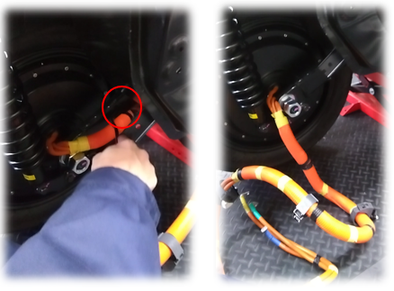
-
フレーム側に後方に固定されているカプラーを外し、後輪モーターに繋がる高圧電源ケーブルの固定クランプ3か所のボルトナットを取り外す。
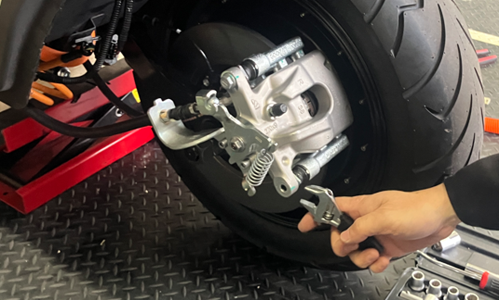
2.ブレーキキャリパー取り外し
-
パーキングブレーキを解除し、ブレーキキャリパーのスライドピンボルト2本を外す。
-
併せてブーツの損傷の有無も確認する。
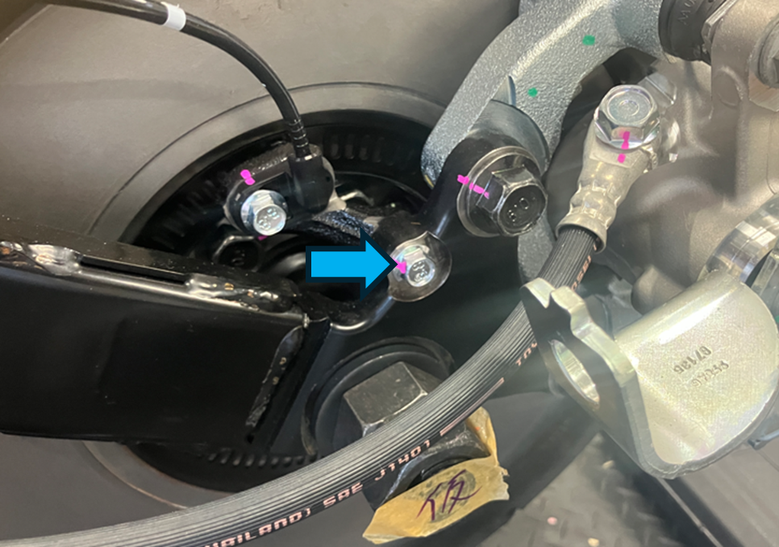
3.車速センサー切り離し
-
車速センサーをブラケットごと取り外す。
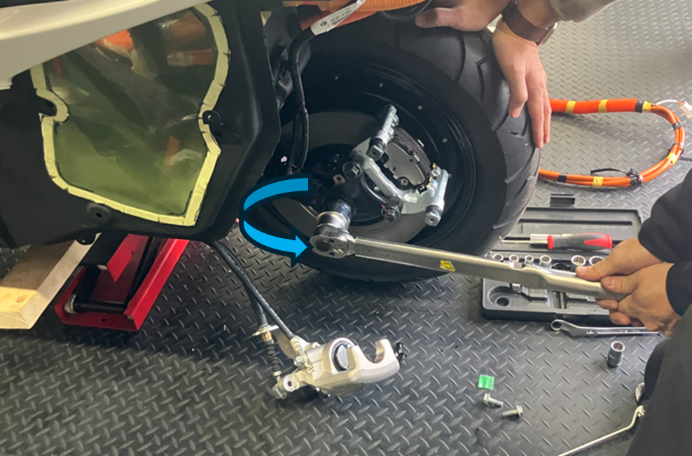
4.RRサスペンションメンバー取り外し
-
アクスルシャフトナット36㎜を緩める。
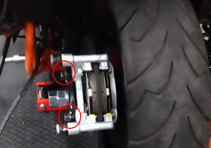
-
ブレーキシリンダ マウンティングを取り外す。
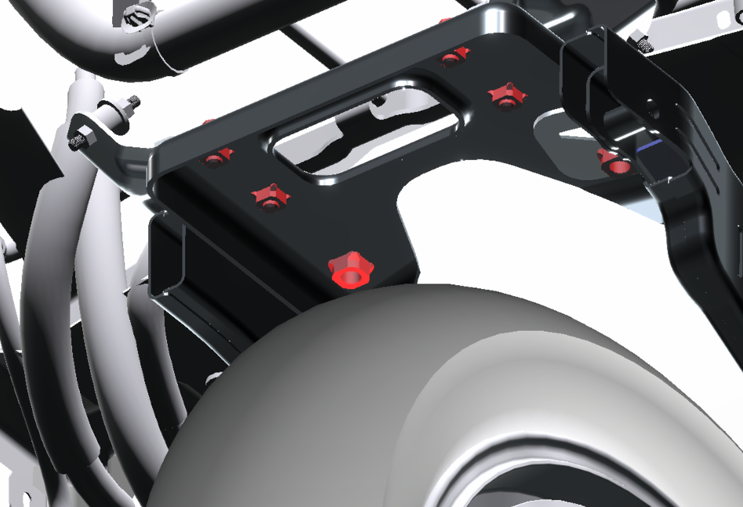
-
ボルト６本を取り外す。
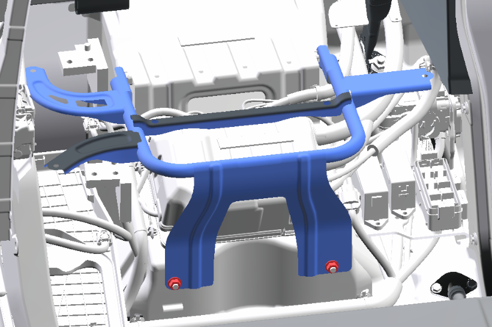
-
ボルト2本、ナット４個を取り外しFRAME ASSY, RR SEAT CUSHIONを取り外す。
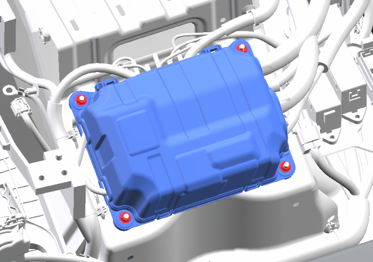
-
高圧JB取り付けナット４個を取り外す。
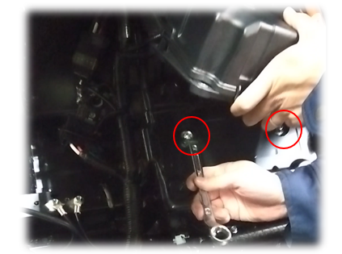
-
高圧JBを少し持ち上げ、ボルト2本を取り外す。
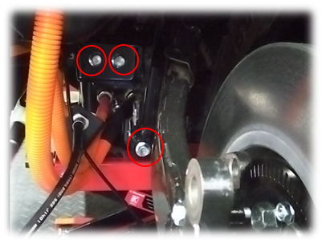
-
ボルト3本を取り外す。
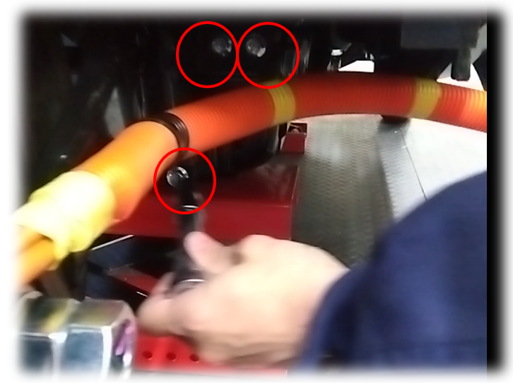
-
ボルト3本を取り外す。
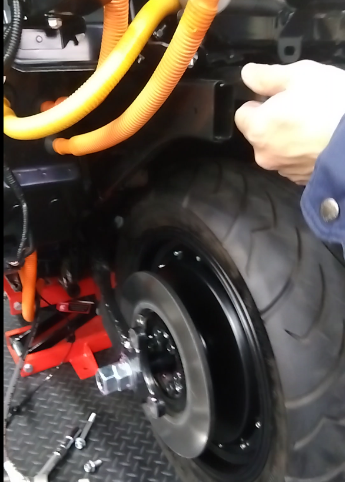
-
RRサスペンションメンバー周辺部品が切り離されていることを確認する。
-
RRサスペンションメンバーをボディーから切り離す。
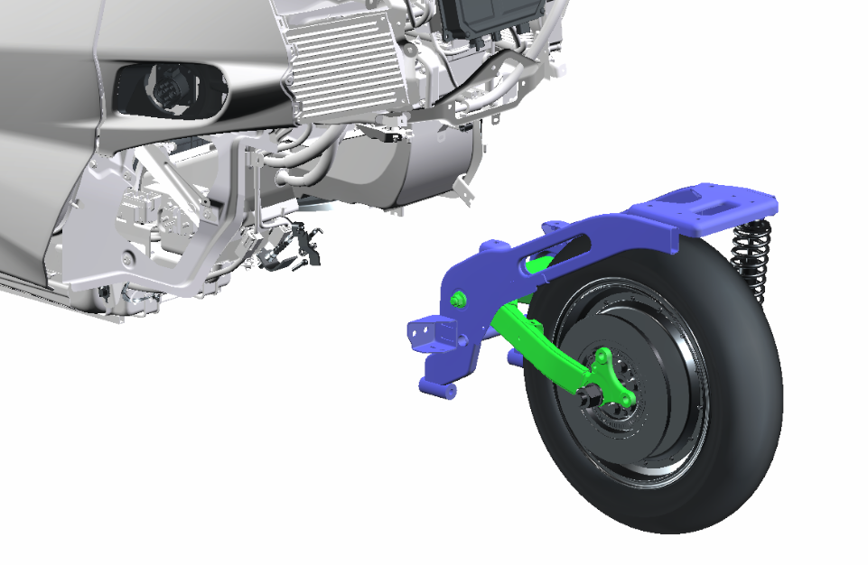
-
リヤタイヤを転がしながらRRサスペンションメンバー一体をと車両後方へ引き出す。
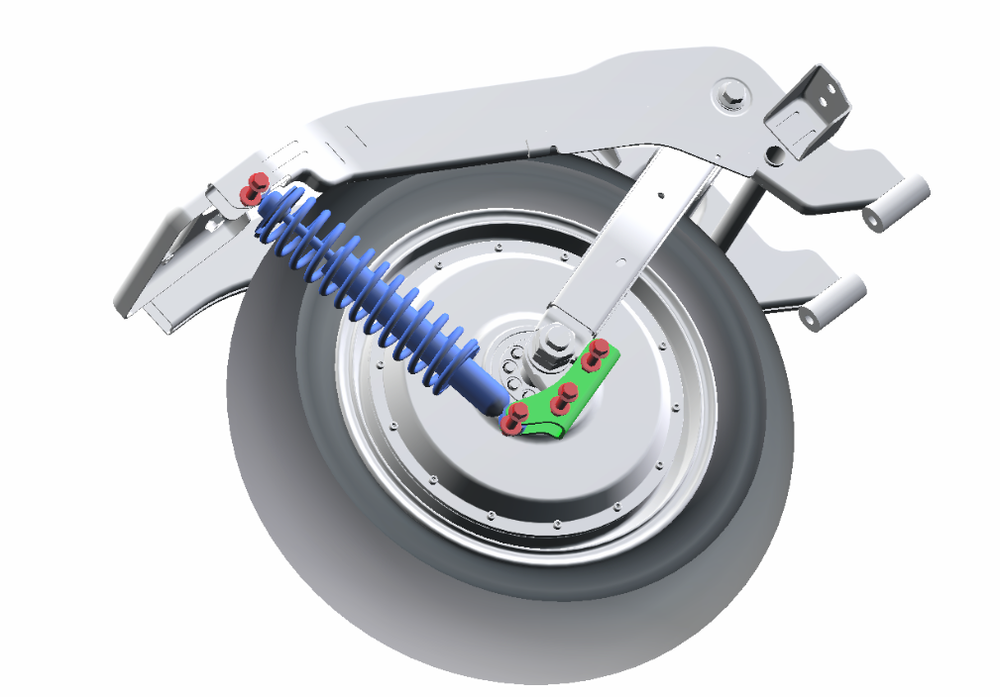
-
リヤショックアブソーバおよびプレートを取り外す。
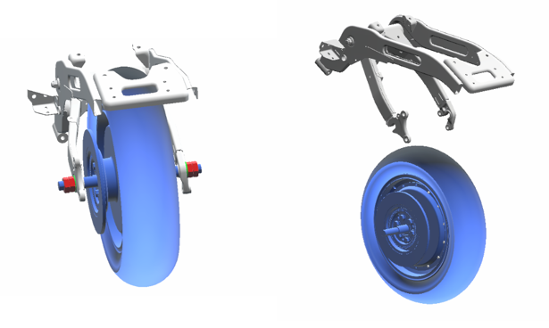
-
リヤタイヤを取り外す。
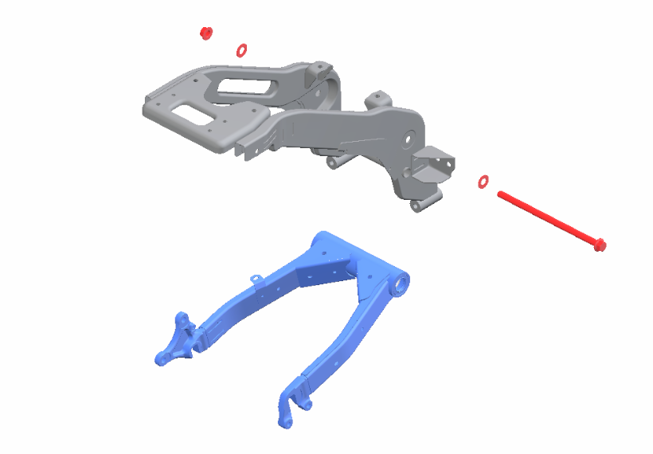
-
ARM SUB-ASSY, RR TRAILINGを取り外す。
取り付け手順
1.MEMBER ASSY, RR SUSPENSION組付け
-
ナットのねじ山部分に軸力安定剤塗布を塗布する。
-
ボルト、ワッシャーおよびナットでMEMBER ASSY, RR SUSPENSIONとARM SUB-ASSY, RR TRAILINGを取り付ける。
-
ナット側を締め付ける。
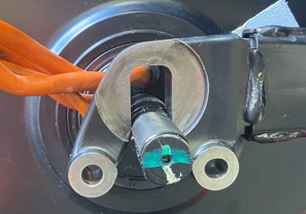
2.ホイール組付け
-
アクスルシャフトの平面（二面）に合わせ、スイングアームを降ろし、L/Rのナットを仮止めする。
-
リヤショックアブソーバおよびプレートを取り付けボルトおよびナットを仮締めする。
-
リヤタイヤを転がしながらRRサスペンションメンバー一体を車体後部と接続する。
-
ボルト3本を取り付ける。
-
ボルト3本を取り付ける。
-
高圧JBを少し持ち上げ、ボルト2本を締め付ける。
-
高圧JB取り付けナット４個を取り付ける。
-
ボルト2本、ナット４個を取り外しFRAME ASSY, RR SEAT CUSHIONを取り付ける。
-
ボルト６本を締め付ける。
-
ブレーキシリンダ マウンティングを取り付ける。
3.車速センサー取り付け
-
車速センサーをブラケット付きで取り付ける。
4.ブレーキキャリパー取り付け
-
ブレーキキャリパーのスライドピンボルト2本を取り付ける。
-
パーキングブレーキケーブルを取り付ける。
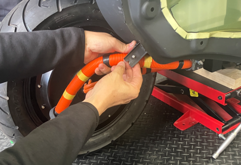
5.高圧電源ケーブルの取り付け
-
タイヤハウス前方のクランプボルトナットから順に取り付ける。
-
高圧電源ケーブルの固定クランプ3か所のボルトナットを取り付ける。
-
フレーム側に後方に固定されているカプラーを接続する。
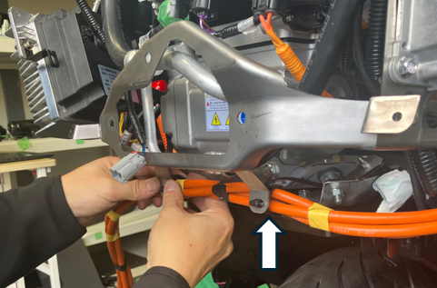
-
車体最後部を配線取り付けステーの内側（車体側）を通して取り付ける。
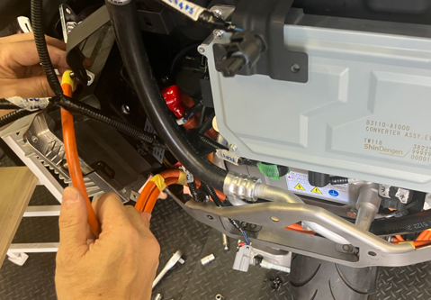
-
インバーターに接続し固定する。
-
インバーター取り付けナット3個を固定する。
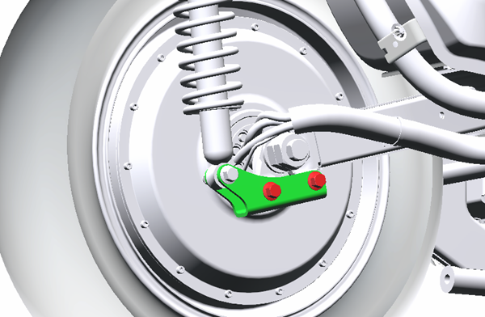
6.サスペンションブラケットの取り付けとシャフトナットの固定
-
リヤショックアブソーバーブラケットボルト2本を本締めする。
-
ショックアブソーバーボルトをジャッキで車高を調整しながら挿入し上下を仮締めする。
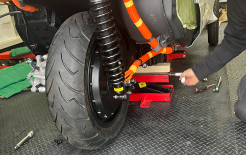
-
ジャッキを下降させタイヤが接地した状態でショックアブソーバーの上下ボルト＆ナットを増し締めする。
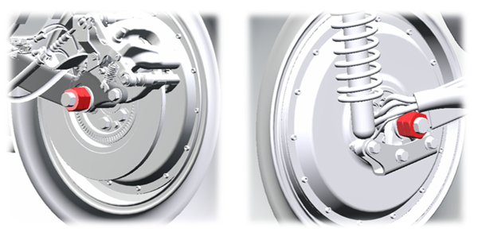
-
アクスルシャフトナットL/Rを締め、ダブルナットで固定する。
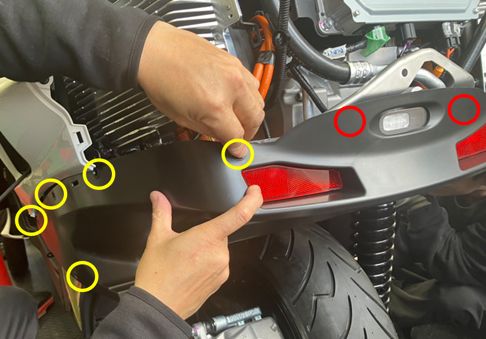
7.リヤロアカウルとリヤフェンダーの取り付け
-
リヤカウルロア（黒）を左4個、右4個、後方2個のプラスチックリベットとインナークリップ2個で固定し、後退灯のカプラーを嵌める。
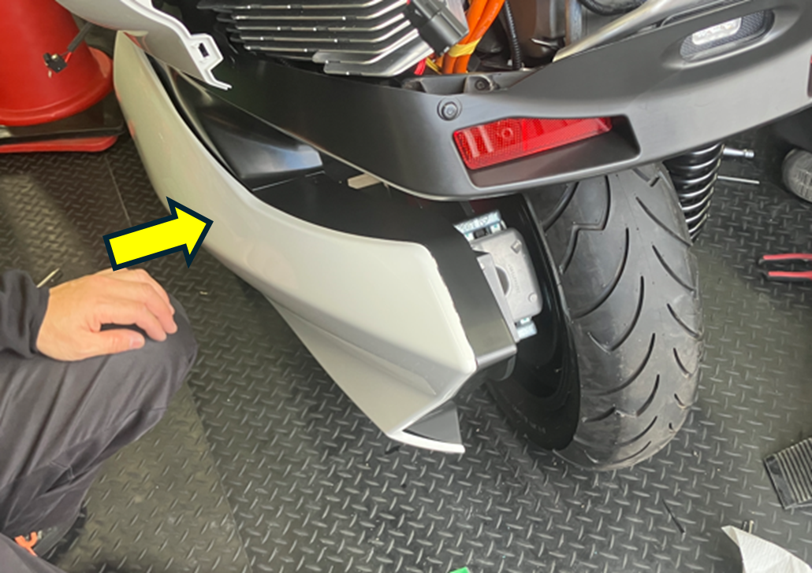
-
インナークリップを嵌め、ドアピラー部のプラスチックリベット2本を嵌め、ボルトで固定する。
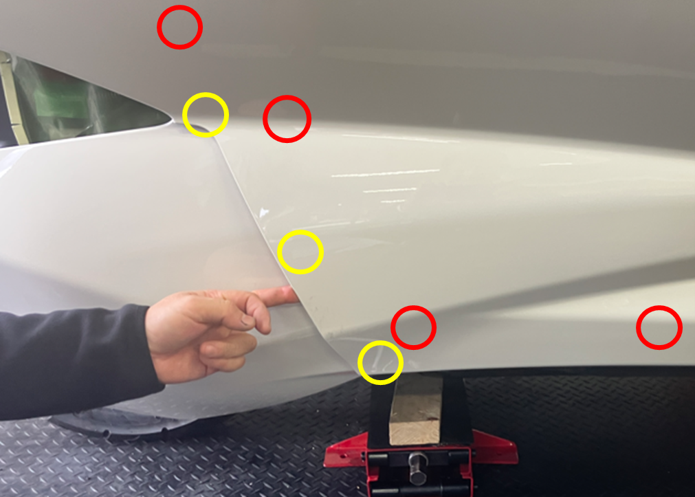
-
リヤフェンダーRはサイドパネルの下側に入り込むので、パネルを浮かしてプラスチックリベット3本を差し込む。
-
リヤフェンダーのインナークリップ4か所を押し込み、サイドパネルのインナークリップを外した本数、押し込む。
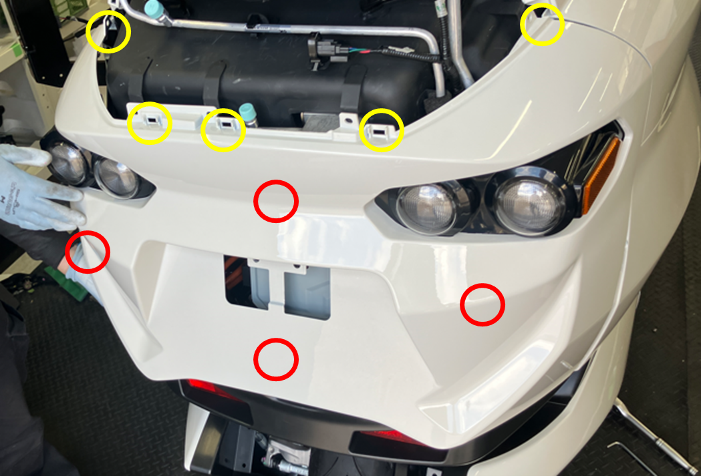
8.リヤカウルの取り付け
-
テールランプのカプラー、ライセンスランプのカプラーをつなぎ、インナークリップ4か所、プラスチックリベット5本でカウルを固定する。
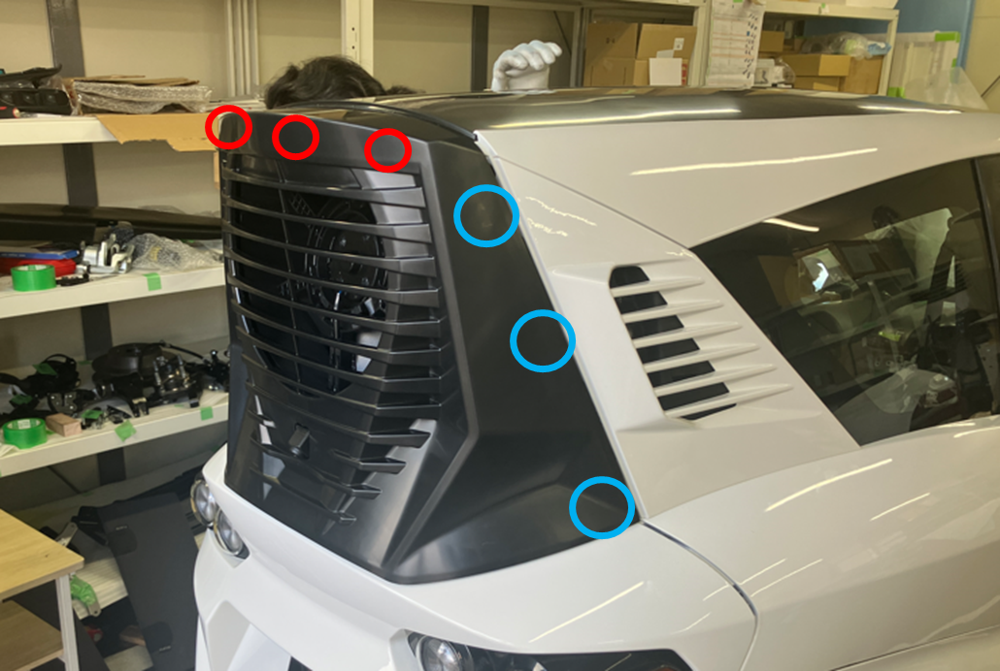
-
インサートクリップ3本×2を取り付けし、インナークリップ3本を嵌め込みベンチレーターカバーを取り付ける。（バックアイカメラ取り付け車両はカプラーを繋ぐ）。
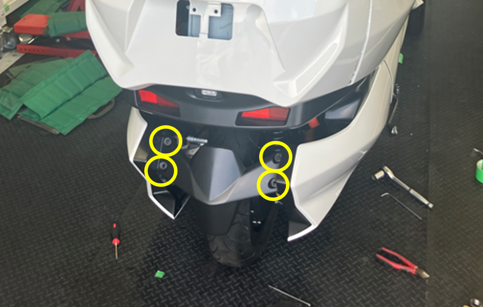
-
泥除けを4か所のプラスチックリベットで固定する。